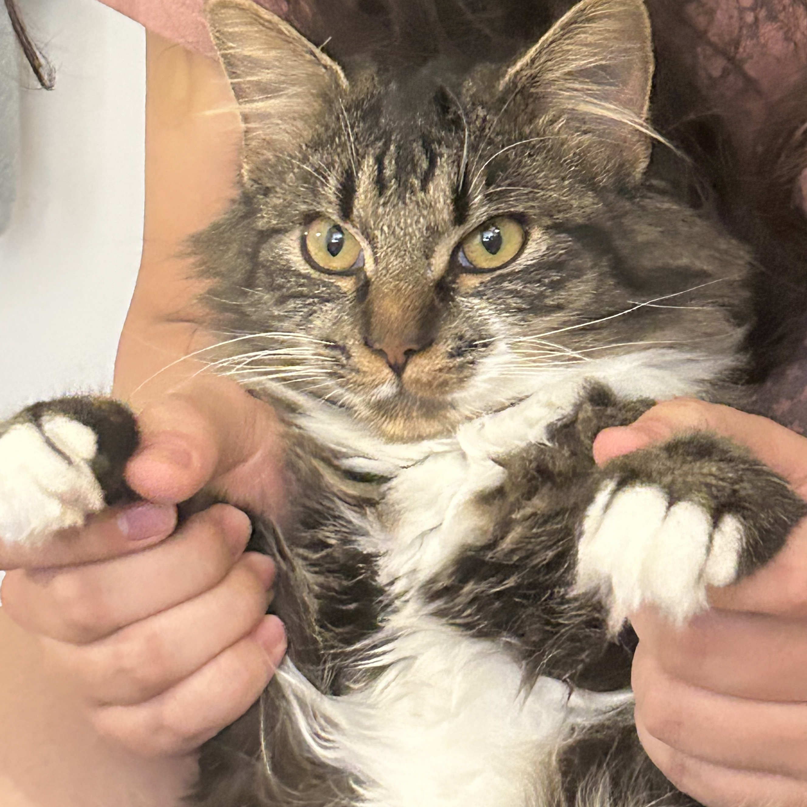

I'm Yixin Xie, a writer and musician. You guys seen Twin Peaks?
Blog post
The Impact of Social Media on Language Evolution
In a world constantly reshaped by digital interaction, social media has accelerated the evolution of language like never before. Platforms like Instagram, X, and TikTok do more than connect us—they drive linguistic innovation, from new words to visual symbols that change how we communicate. This blog post dives into the ways social media redefines language, highlighting the rise of visual expressions like emojis and GIFs, and the impact of memes and slang. Discover how these changes matter for anyone navigating the digital landscape, influencing communication styles in both personal and professional fields.
Video
Video title
Add a short but appealing description of your video.
Watch
Podcast
Taylor Swift VS. Spotify
This podcast is about exploring the effects of Taylor swift vs Spotify on the music industry.
Listen